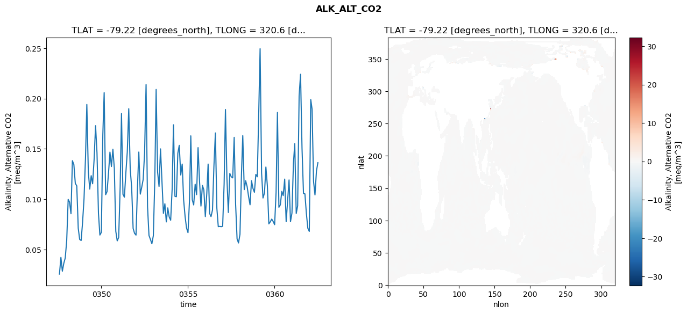
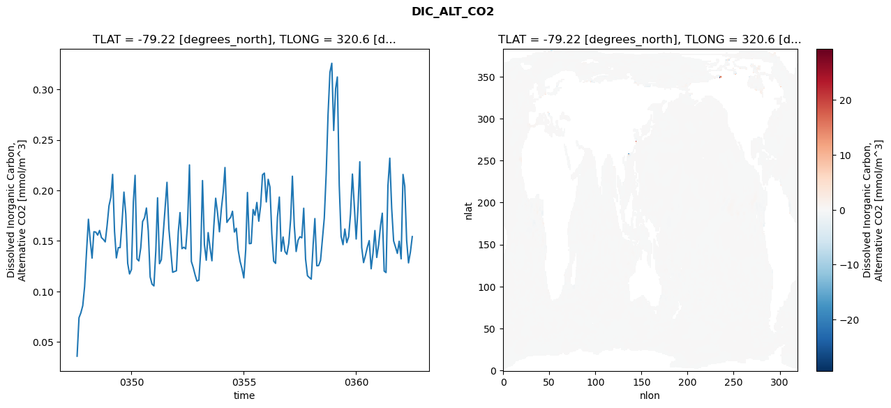
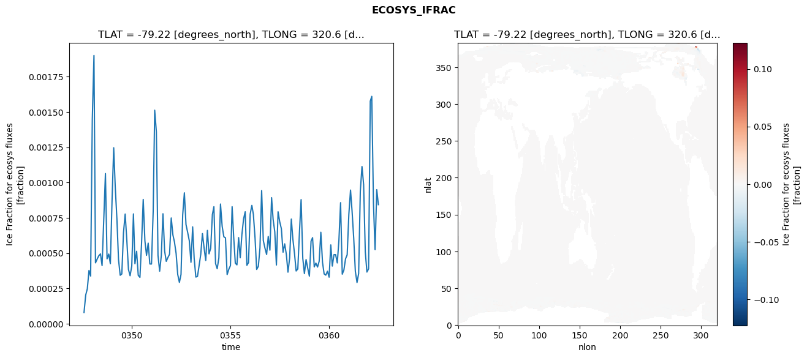
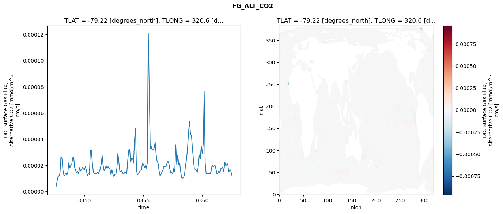

glb-dor_North_Atlantic_basin_012_1999-07-01_00050#
Simulation details#
Case: smyle.cdr-atlas-v0.glb-dor_North_Atlantic_basin_012_1999-07-01_00050.001
Basin: North_Atlantic_basin
Polygon: 12.0
Start date: 1999-07
Show code cell source Hide code cell source
import xarray as xr
import matplotlib.pyplot as plt
Show code cell source Hide code cell source
zarr_store = "/path/to/zarr/store"
# Parameters
zarr_store = "/global/cfs/projectdirs/m4746/Projects/Ocean-CDR-Atlas-v0/data/validation/smyle.cdr-atlas-v0.glb-dor_North_Atlantic_basin_012_1999-07-01_00050.001.validation.zarr"
Show code cell source Hide code cell source
%%time
ds_o = xr.open_zarr(zarr_store).compute()
ds_o
CPU times: user 661 ms, sys: 465 ms, total: 1.13 s
Wall time: 1.51 s
<xarray.Dataset> Size: 2MB
Dimensions: (nlat: 384, nlon: 320, time: 180)
Coordinates:
TLAT float64 8B -79.22
TLONG float64 8B 320.6
ULAT float64 8B -78.95
ULONG float64 8B 321.1
* time (time) object 1kB 0347-08-01 00:00:00 ... 0362-07-01 0...
z_t float32 4B 500.0
Dimensions without coordinates: nlat, nlon
Data variables:
ALK_ALT_CO2_diff (nlat, nlon) float32 492kB nan nan nan ... nan nan nan
ALK_ALT_CO2_rmse (time) float64 1kB 0.02548 0.04212 ... 0.128 0.1362
DIC_ALT_CO2_diff (nlat, nlon) float32 492kB nan nan nan ... nan nan nan
DIC_ALT_CO2_rmse (time) float64 1kB 0.03589 0.07398 ... 0.1392 0.1543
ECOSYS_IFRAC_diff (nlat, nlon) float32 492kB nan nan nan ... nan nan nan
ECOSYS_IFRAC_rmse (time) float64 1kB 7.921e-05 0.000203 ... 0.0008436
FG_ALT_CO2_diff (nlat, nlon) float32 492kB nan nan nan ... nan nan nan
FG_ALT_CO2_rmse (time) float64 1kB 3.568e-06 7.713e-06 ... 1.258e-05xarray.Dataset
- nlat: 384
- nlon: 320
- time: 180
- TLAT()float64-79.22
- long_name :
- array of t-grid latitudes
- units :
- degrees_north
array(-79.22052261)
- TLONG()float64320.6
- long_name :
- array of t-grid longitudes
- units :
- degrees_east
array(320.56250892)
- ULAT()float64-78.95
- long_name :
- array of u-grid latitudes
- units :
- degrees_north
array(-78.95289509)
- ULONG()float64321.1
- long_name :
- array of u-grid longitudes
- units :
- degrees_east
array(321.12500894)
- time(time)object0347-08-01 00:00:00 ... 0362-07-...
- bounds :
- time_bound
- long_name :
- time
array([cftime.DatetimeNoLeap(347, 8, 1, 0, 0, 0, 0, has_year_zero=True), cftime.DatetimeNoLeap(347, 9, 1, 0, 0, 0, 0, has_year_zero=True), cftime.DatetimeNoLeap(347, 10, 1, 0, 0, 0, 0, has_year_zero=True), cftime.DatetimeNoLeap(347, 11, 1, 0, 0, 0, 0, has_year_zero=True), cftime.DatetimeNoLeap(347, 12, 1, 0, 0, 0, 0, has_year_zero=True), cftime.DatetimeNoLeap(348, 1, 1, 0, 0, 0, 0, has_year_zero=True), cftime.DatetimeNoLeap(348, 2, 1, 0, 0, 0, 0, has_year_zero=True), cftime.DatetimeNoLeap(348, 3, 1, 0, 0, 0, 0, has_year_zero=True), cftime.DatetimeNoLeap(348, 4, 1, 0, 0, 0, 0, has_year_zero=True), cftime.DatetimeNoLeap(348, 5, 1, 0, 0, 0, 0, has_year_zero=True), cftime.DatetimeNoLeap(348, 6, 1, 0, 0, 0, 0, has_year_zero=True), cftime.DatetimeNoLeap(348, 7, 1, 0, 0, 0, 0, has_year_zero=True), cftime.DatetimeNoLeap(348, 8, 1, 0, 0, 0, 0, has_year_zero=True), cftime.DatetimeNoLeap(348, 9, 1, 0, 0, 0, 0, has_year_zero=True), cftime.DatetimeNoLeap(348, 10, 1, 0, 0, 0, 0, has_year_zero=True), cftime.DatetimeNoLeap(348, 11, 1, 0, 0, 0, 0, has_year_zero=True), cftime.DatetimeNoLeap(348, 12, 1, 0, 0, 0, 0, has_year_zero=True), cftime.DatetimeNoLeap(349, 1, 1, 0, 0, 0, 0, has_year_zero=True), cftime.DatetimeNoLeap(349, 2, 1, 0, 0, 0, 0, has_year_zero=True), cftime.DatetimeNoLeap(349, 3, 1, 0, 0, 0, 0, has_year_zero=True), cftime.DatetimeNoLeap(349, 4, 1, 0, 0, 0, 0, has_year_zero=True), cftime.DatetimeNoLeap(349, 5, 1, 0, 0, 0, 0, has_year_zero=True), cftime.DatetimeNoLeap(349, 6, 1, 0, 0, 0, 0, has_year_zero=True), cftime.DatetimeNoLeap(349, 7, 1, 0, 0, 0, 0, has_year_zero=True), cftime.DatetimeNoLeap(349, 8, 1, 0, 0, 0, 0, has_year_zero=True), cftime.DatetimeNoLeap(349, 9, 1, 0, 0, 0, 0, has_year_zero=True), cftime.DatetimeNoLeap(349, 10, 1, 0, 0, 0, 0, has_year_zero=True), cftime.DatetimeNoLeap(349, 11, 1, 0, 0, 0, 0, has_year_zero=True), cftime.DatetimeNoLeap(349, 12, 1, 0, 0, 0, 0, has_year_zero=True), cftime.DatetimeNoLeap(350, 1, 1, 0, 0, 0, 0, has_year_zero=True), cftime.DatetimeNoLeap(350, 2, 1, 0, 0, 0, 0, has_year_zero=True), cftime.DatetimeNoLeap(350, 3, 1, 0, 0, 0, 0, has_year_zero=True), cftime.DatetimeNoLeap(350, 4, 1, 0, 0, 0, 0, has_year_zero=True), cftime.DatetimeNoLeap(350, 5, 1, 0, 0, 0, 0, has_year_zero=True), cftime.DatetimeNoLeap(350, 6, 1, 0, 0, 0, 0, has_year_zero=True), cftime.DatetimeNoLeap(350, 7, 1, 0, 0, 0, 0, has_year_zero=True), cftime.DatetimeNoLeap(350, 8, 1, 0, 0, 0, 0, has_year_zero=True), cftime.DatetimeNoLeap(350, 9, 1, 0, 0, 0, 0, has_year_zero=True), cftime.DatetimeNoLeap(350, 10, 1, 0, 0, 0, 0, has_year_zero=True), cftime.DatetimeNoLeap(350, 11, 1, 0, 0, 0, 0, has_year_zero=True), cftime.DatetimeNoLeap(350, 12, 1, 0, 0, 0, 0, has_year_zero=True), cftime.DatetimeNoLeap(351, 1, 1, 0, 0, 0, 0, has_year_zero=True), cftime.DatetimeNoLeap(351, 2, 1, 0, 0, 0, 0, has_year_zero=True), cftime.DatetimeNoLeap(351, 3, 1, 0, 0, 0, 0, has_year_zero=True), cftime.DatetimeNoLeap(351, 4, 1, 0, 0, 0, 0, has_year_zero=True), cftime.DatetimeNoLeap(351, 5, 1, 0, 0, 0, 0, has_year_zero=True), cftime.DatetimeNoLeap(351, 6, 1, 0, 0, 0, 0, has_year_zero=True), cftime.DatetimeNoLeap(351, 7, 1, 0, 0, 0, 0, has_year_zero=True), cftime.DatetimeNoLeap(351, 8, 1, 0, 0, 0, 0, has_year_zero=True), cftime.DatetimeNoLeap(351, 9, 1, 0, 0, 0, 0, has_year_zero=True), cftime.DatetimeNoLeap(351, 10, 1, 0, 0, 0, 0, has_year_zero=True), cftime.DatetimeNoLeap(351, 11, 1, 0, 0, 0, 0, has_year_zero=True), cftime.DatetimeNoLeap(351, 12, 1, 0, 0, 0, 0, has_year_zero=True), cftime.DatetimeNoLeap(352, 1, 1, 0, 0, 0, 0, has_year_zero=True), cftime.DatetimeNoLeap(352, 2, 1, 0, 0, 0, 0, has_year_zero=True), cftime.DatetimeNoLeap(352, 3, 1, 0, 0, 0, 0, has_year_zero=True), cftime.DatetimeNoLeap(352, 4, 1, 0, 0, 0, 0, has_year_zero=True), cftime.DatetimeNoLeap(352, 5, 1, 0, 0, 0, 0, has_year_zero=True), cftime.DatetimeNoLeap(352, 6, 1, 0, 0, 0, 0, has_year_zero=True), cftime.DatetimeNoLeap(352, 7, 1, 0, 0, 0, 0, has_year_zero=True), cftime.DatetimeNoLeap(352, 8, 1, 0, 0, 0, 0, has_year_zero=True), cftime.DatetimeNoLeap(352, 9, 1, 0, 0, 0, 0, has_year_zero=True), cftime.DatetimeNoLeap(352, 10, 1, 0, 0, 0, 0, has_year_zero=True), cftime.DatetimeNoLeap(352, 11, 1, 0, 0, 0, 0, has_year_zero=True), cftime.DatetimeNoLeap(352, 12, 1, 0, 0, 0, 0, has_year_zero=True), cftime.DatetimeNoLeap(353, 1, 1, 0, 0, 0, 0, has_year_zero=True), cftime.DatetimeNoLeap(353, 2, 1, 0, 0, 0, 0, has_year_zero=True), cftime.DatetimeNoLeap(353, 3, 1, 0, 0, 0, 0, has_year_zero=True), cftime.DatetimeNoLeap(353, 4, 1, 0, 0, 0, 0, has_year_zero=True), cftime.DatetimeNoLeap(353, 5, 1, 0, 0, 0, 0, has_year_zero=True), cftime.DatetimeNoLeap(353, 6, 1, 0, 0, 0, 0, has_year_zero=True), cftime.DatetimeNoLeap(353, 7, 1, 0, 0, 0, 0, has_year_zero=True), cftime.DatetimeNoLeap(353, 8, 1, 0, 0, 0, 0, has_year_zero=True), cftime.DatetimeNoLeap(353, 9, 1, 0, 0, 0, 0, has_year_zero=True), cftime.DatetimeNoLeap(353, 10, 1, 0, 0, 0, 0, has_year_zero=True), cftime.DatetimeNoLeap(353, 11, 1, 0, 0, 0, 0, has_year_zero=True), cftime.DatetimeNoLeap(353, 12, 1, 0, 0, 0, 0, has_year_zero=True), cftime.DatetimeNoLeap(354, 1, 1, 0, 0, 0, 0, has_year_zero=True), cftime.DatetimeNoLeap(354, 2, 1, 0, 0, 0, 0, has_year_zero=True), cftime.DatetimeNoLeap(354, 3, 1, 0, 0, 0, 0, has_year_zero=True), cftime.DatetimeNoLeap(354, 4, 1, 0, 0, 0, 0, has_year_zero=True), cftime.DatetimeNoLeap(354, 5, 1, 0, 0, 0, 0, has_year_zero=True), cftime.DatetimeNoLeap(354, 6, 1, 0, 0, 0, 0, has_year_zero=True), cftime.DatetimeNoLeap(354, 7, 1, 0, 0, 0, 0, has_year_zero=True), cftime.DatetimeNoLeap(354, 8, 1, 0, 0, 0, 0, has_year_zero=True), cftime.DatetimeNoLeap(354, 9, 1, 0, 0, 0, 0, has_year_zero=True), cftime.DatetimeNoLeap(354, 10, 1, 0, 0, 0, 0, has_year_zero=True), cftime.DatetimeNoLeap(354, 11, 1, 0, 0, 0, 0, has_year_zero=True), cftime.DatetimeNoLeap(354, 12, 1, 0, 0, 0, 0, has_year_zero=True), cftime.DatetimeNoLeap(355, 1, 1, 0, 0, 0, 0, has_year_zero=True), cftime.DatetimeNoLeap(355, 2, 1, 0, 0, 0, 0, has_year_zero=True), cftime.DatetimeNoLeap(355, 3, 1, 0, 0, 0, 0, has_year_zero=True), cftime.DatetimeNoLeap(355, 4, 1, 0, 0, 0, 0, has_year_zero=True), cftime.DatetimeNoLeap(355, 5, 1, 0, 0, 0, 0, has_year_zero=True), cftime.DatetimeNoLeap(355, 6, 1, 0, 0, 0, 0, has_year_zero=True), cftime.DatetimeNoLeap(355, 7, 1, 0, 0, 0, 0, has_year_zero=True), cftime.DatetimeNoLeap(355, 8, 1, 0, 0, 0, 0, has_year_zero=True), cftime.DatetimeNoLeap(355, 9, 1, 0, 0, 0, 0, has_year_zero=True), cftime.DatetimeNoLeap(355, 10, 1, 0, 0, 0, 0, has_year_zero=True), cftime.DatetimeNoLeap(355, 11, 1, 0, 0, 0, 0, has_year_zero=True), cftime.DatetimeNoLeap(355, 12, 1, 0, 0, 0, 0, has_year_zero=True), cftime.DatetimeNoLeap(356, 1, 1, 0, 0, 0, 0, has_year_zero=True), cftime.DatetimeNoLeap(356, 2, 1, 0, 0, 0, 0, has_year_zero=True), cftime.DatetimeNoLeap(356, 3, 1, 0, 0, 0, 0, has_year_zero=True), cftime.DatetimeNoLeap(356, 4, 1, 0, 0, 0, 0, has_year_zero=True), cftime.DatetimeNoLeap(356, 5, 1, 0, 0, 0, 0, has_year_zero=True), cftime.DatetimeNoLeap(356, 6, 1, 0, 0, 0, 0, has_year_zero=True), cftime.DatetimeNoLeap(356, 7, 1, 0, 0, 0, 0, has_year_zero=True), cftime.DatetimeNoLeap(356, 8, 1, 0, 0, 0, 0, has_year_zero=True), cftime.DatetimeNoLeap(356, 9, 1, 0, 0, 0, 0, has_year_zero=True), cftime.DatetimeNoLeap(356, 10, 1, 0, 0, 0, 0, has_year_zero=True), cftime.DatetimeNoLeap(356, 11, 1, 0, 0, 0, 0, has_year_zero=True), cftime.DatetimeNoLeap(356, 12, 1, 0, 0, 0, 0, has_year_zero=True), cftime.DatetimeNoLeap(357, 1, 1, 0, 0, 0, 0, has_year_zero=True), cftime.DatetimeNoLeap(357, 2, 1, 0, 0, 0, 0, has_year_zero=True), cftime.DatetimeNoLeap(357, 3, 1, 0, 0, 0, 0, has_year_zero=True), cftime.DatetimeNoLeap(357, 4, 1, 0, 0, 0, 0, has_year_zero=True), cftime.DatetimeNoLeap(357, 5, 1, 0, 0, 0, 0, has_year_zero=True), cftime.DatetimeNoLeap(357, 6, 1, 0, 0, 0, 0, has_year_zero=True), cftime.DatetimeNoLeap(357, 7, 1, 0, 0, 0, 0, has_year_zero=True), cftime.DatetimeNoLeap(357, 8, 1, 0, 0, 0, 0, has_year_zero=True), cftime.DatetimeNoLeap(357, 9, 1, 0, 0, 0, 0, has_year_zero=True), cftime.DatetimeNoLeap(357, 10, 1, 0, 0, 0, 0, has_year_zero=True), cftime.DatetimeNoLeap(357, 11, 1, 0, 0, 0, 0, has_year_zero=True), cftime.DatetimeNoLeap(357, 12, 1, 0, 0, 0, 0, has_year_zero=True), cftime.DatetimeNoLeap(358, 1, 1, 0, 0, 0, 0, has_year_zero=True), cftime.DatetimeNoLeap(358, 2, 1, 0, 0, 0, 0, has_year_zero=True), cftime.DatetimeNoLeap(358, 3, 1, 0, 0, 0, 0, has_year_zero=True), cftime.DatetimeNoLeap(358, 4, 1, 0, 0, 0, 0, has_year_zero=True), cftime.DatetimeNoLeap(358, 5, 1, 0, 0, 0, 0, has_year_zero=True), cftime.DatetimeNoLeap(358, 6, 1, 0, 0, 0, 0, has_year_zero=True), cftime.DatetimeNoLeap(358, 7, 1, 0, 0, 0, 0, has_year_zero=True), cftime.DatetimeNoLeap(358, 8, 1, 0, 0, 0, 0, has_year_zero=True), cftime.DatetimeNoLeap(358, 9, 1, 0, 0, 0, 0, has_year_zero=True), cftime.DatetimeNoLeap(358, 10, 1, 0, 0, 0, 0, has_year_zero=True), cftime.DatetimeNoLeap(358, 11, 1, 0, 0, 0, 0, has_year_zero=True), cftime.DatetimeNoLeap(358, 12, 1, 0, 0, 0, 0, has_year_zero=True), cftime.DatetimeNoLeap(359, 1, 1, 0, 0, 0, 0, has_year_zero=True), cftime.DatetimeNoLeap(359, 2, 1, 0, 0, 0, 0, has_year_zero=True), cftime.DatetimeNoLeap(359, 3, 1, 0, 0, 0, 0, has_year_zero=True), cftime.DatetimeNoLeap(359, 4, 1, 0, 0, 0, 0, has_year_zero=True), cftime.DatetimeNoLeap(359, 5, 1, 0, 0, 0, 0, has_year_zero=True), cftime.DatetimeNoLeap(359, 6, 1, 0, 0, 0, 0, has_year_zero=True), cftime.DatetimeNoLeap(359, 7, 1, 0, 0, 0, 0, has_year_zero=True), cftime.DatetimeNoLeap(359, 8, 1, 0, 0, 0, 0, has_year_zero=True), cftime.DatetimeNoLeap(359, 9, 1, 0, 0, 0, 0, has_year_zero=True), cftime.DatetimeNoLeap(359, 10, 1, 0, 0, 0, 0, has_year_zero=True), cftime.DatetimeNoLeap(359, 11, 1, 0, 0, 0, 0, has_year_zero=True), cftime.DatetimeNoLeap(359, 12, 1, 0, 0, 0, 0, has_year_zero=True), cftime.DatetimeNoLeap(360, 1, 1, 0, 0, 0, 0, has_year_zero=True), cftime.DatetimeNoLeap(360, 2, 1, 0, 0, 0, 0, has_year_zero=True), cftime.DatetimeNoLeap(360, 3, 1, 0, 0, 0, 0, has_year_zero=True), cftime.DatetimeNoLeap(360, 4, 1, 0, 0, 0, 0, has_year_zero=True), cftime.DatetimeNoLeap(360, 5, 1, 0, 0, 0, 0, has_year_zero=True), cftime.DatetimeNoLeap(360, 6, 1, 0, 0, 0, 0, has_year_zero=True), cftime.DatetimeNoLeap(360, 7, 1, 0, 0, 0, 0, has_year_zero=True), cftime.DatetimeNoLeap(360, 8, 1, 0, 0, 0, 0, has_year_zero=True), cftime.DatetimeNoLeap(360, 9, 1, 0, 0, 0, 0, has_year_zero=True), cftime.DatetimeNoLeap(360, 10, 1, 0, 0, 0, 0, has_year_zero=True), cftime.DatetimeNoLeap(360, 11, 1, 0, 0, 0, 0, has_year_zero=True), cftime.DatetimeNoLeap(360, 12, 1, 0, 0, 0, 0, has_year_zero=True), cftime.DatetimeNoLeap(361, 1, 1, 0, 0, 0, 0, has_year_zero=True), cftime.DatetimeNoLeap(361, 2, 1, 0, 0, 0, 0, has_year_zero=True), cftime.DatetimeNoLeap(361, 3, 1, 0, 0, 0, 0, has_year_zero=True), cftime.DatetimeNoLeap(361, 4, 1, 0, 0, 0, 0, has_year_zero=True), cftime.DatetimeNoLeap(361, 5, 1, 0, 0, 0, 0, has_year_zero=True), cftime.DatetimeNoLeap(361, 6, 1, 0, 0, 0, 0, has_year_zero=True), cftime.DatetimeNoLeap(361, 7, 1, 0, 0, 0, 0, has_year_zero=True), cftime.DatetimeNoLeap(361, 8, 1, 0, 0, 0, 0, has_year_zero=True), cftime.DatetimeNoLeap(361, 9, 1, 0, 0, 0, 0, has_year_zero=True), cftime.DatetimeNoLeap(361, 10, 1, 0, 0, 0, 0, has_year_zero=True), cftime.DatetimeNoLeap(361, 11, 1, 0, 0, 0, 0, has_year_zero=True), cftime.DatetimeNoLeap(361, 12, 1, 0, 0, 0, 0, has_year_zero=True), cftime.DatetimeNoLeap(362, 1, 1, 0, 0, 0, 0, has_year_zero=True), cftime.DatetimeNoLeap(362, 2, 1, 0, 0, 0, 0, has_year_zero=True), cftime.DatetimeNoLeap(362, 3, 1, 0, 0, 0, 0, has_year_zero=True), cftime.DatetimeNoLeap(362, 4, 1, 0, 0, 0, 0, has_year_zero=True), cftime.DatetimeNoLeap(362, 5, 1, 0, 0, 0, 0, has_year_zero=True), cftime.DatetimeNoLeap(362, 6, 1, 0, 0, 0, 0, has_year_zero=True), cftime.DatetimeNoLeap(362, 7, 1, 0, 0, 0, 0, has_year_zero=True)], dtype=object) - z_t()float32500.0
- long_name :
- depth from surface to midpoint of layer
- positive :
- down
- units :
- centimeters
- valid_max :
- 537500.0
- valid_min :
- 500.0
array(500., dtype=float32)
- ALK_ALT_CO2_diff(nlat, nlon)float32nan nan nan nan ... nan nan nan nan
- cell_methods :
- time: mean
- grid_loc :
- 3111
- long_name :
- Alkalinity, Alternative CO2
- units :
- meq/m^3
array([[ nan, nan, nan, ..., nan, nan, nan], [ nan, nan, nan, ..., nan, nan, nan], [0.01269531, 0.00537109, 0.02050781, ..., nan, nan, nan], ..., [ nan, nan, nan, ..., nan, nan, nan], [ nan, nan, nan, ..., nan, nan, nan], [ nan, nan, nan, ..., nan, nan, nan]], dtype=float32) - ALK_ALT_CO2_rmse(time)float640.02548 0.04212 ... 0.128 0.1362
- cell_methods :
- time: mean
- grid_loc :
- 3111
- long_name :
- Alkalinity, Alternative CO2
- units :
- meq/m^3
array([0.02547607, 0.04212115, 0.02837109, 0.03627667, 0.04149194, 0.05876299, 0.09977655, 0.09714592, 0.08551658, 0.13828568, 0.13430538, 0.115725 , 0.11320346, 0.07106958, 0.05999954, 0.05889849, 0.076831 , 0.10058821, 0.14133251, 0.19413365, 0.12727238, 0.1100265 , 0.12334593, 0.11533878, 0.13935705, 0.17303443, 0.14601798, 0.08578096, 0.06431794, 0.06701216, 0.16417385, 0.2058776 , 0.10442394, 0.1075499 , 0.12614781, 0.14677751, 0.13247585, 0.14964515, 0.13067843, 0.06813425, 0.05855302, 0.0619856 , 0.11191735, 0.18510671, 0.1048495 , 0.10196863, 0.12617212, 0.14686118, 0.18992684, 0.12958462, 0.11194363, 0.07097465, 0.06607393, 0.06426636, 0.1120957 , 0.14686273, 0.10500307, 0.11176228, 0.11962869, 0.14637384, 0.21389927, 0.09230456, 0.06396642, 0.05993819, 0.05567224, 0.06373108, 0.11953127, 0.20907011, 0.12679359, 0.11265905, 0.14998465, 0.11830367, 0.08585875, 0.0954237 , 0.07739909, 0.09134225, 0.08229091, 0.07903394, 0.10996521, 0.17393228, 0.1028344 , 0.10242433, 0.14571803, 0.15350004, 0.1240006 , 0.13487244, 0.0992524 , 0.08269382, 0.0713911 , 0.06670961, 0.09809901, 0.16295089, 0.09943981, 0.09425797, 0.11479938, 0.10446481, 0.15123648, 0.11772076, 0.09315078, 0.11363947, 0.10927185, 0.08266567, 0.10562438, 0.1348961 , 0.08583775, 0.08267317, 0.0892497 , 0.13262782, 0.16582151, 0.09104502, 0.07267979, 0.07298703, 0.07264871, 0.07303307, 0.11496554, 0.18912311, 0.12069313, 0.08673853, 0.1256004 , 0.12221417, 0.12117268, 0.1614596 , 0.09515929, 0.06050377, 0.05644709, 0.06510323, 0.12428699, 0.16315996, 0.10950245, 0.11832296, 0.11239901, 0.10275674, 0.09441794, 0.11830522, 0.11080606, 0.10682709, 0.12458522, 0.12226292, 0.18677452, 0.24957829, 0.12609706, 0.1011419 , 0.10606651, 0.13196384, 0.11316511, 0.07541196, 0.07743873, 0.08018502, 0.07783448, 0.07464047, 0.10699353, 0.18620175, 0.09194587, 0.09432542, 0.10777774, 0.10357902, 0.11995953, 0.07761259, 0.09835448, 0.11911739, 0.07760446, 0.08624355, 0.13550697, 0.15515483, 0.0857592 , 0.09345683, 0.20257279, 0.22415581, 0.15066928, 0.10553035, 0.10531203, 0.08567976, 0.07118857, 0.06795621, 0.19899959, 0.18943159, 0.11765775, 0.10420322, 0.12804222, 0.13624751]) - DIC_ALT_CO2_diff(nlat, nlon)float32nan nan nan nan ... nan nan nan nan
- cell_methods :
- time: mean
- grid_loc :
- 3111
- long_name :
- Dissolved Inorganic Carbon, Alternative CO2
- units :
- mmol/m^3
array([[ nan, nan, nan, ..., nan, nan, nan], [ nan, nan, nan, ..., nan, nan, nan], [ 0.00097656, -0.00512695, 0.00463867, ..., nan, nan, nan], ..., [ nan, nan, nan, ..., nan, nan, nan], [ nan, nan, nan, ..., nan, nan, nan], [ nan, nan, nan, ..., nan, nan, nan]], dtype=float32) - DIC_ALT_CO2_rmse(time)float640.03589 0.07398 ... 0.1392 0.1543
- cell_methods :
- time: mean
- grid_loc :
- 3111
- long_name :
- Dissolved Inorganic Carbon, Alternative CO2
- units :
- mmol/m^3
array([0.03588529, 0.07398064, 0.07877131, 0.08591993, 0.10474469, 0.13895175, 0.17147054, 0.15147586, 0.13301741, 0.15912249, 0.15874588, 0.15578623, 0.16037005, 0.15324226, 0.15156125, 0.14906795, 0.16508838, 0.18478535, 0.19349138, 0.2158717 , 0.15951582, 0.13319854, 0.143376 , 0.14336917, 0.16850967, 0.19835011, 0.17645551, 0.12774296, 0.11732448, 0.12180138, 0.18887038, 0.21496612, 0.13212397, 0.13024289, 0.14324366, 0.16918411, 0.17285377, 0.18257465, 0.1599667 , 0.11432141, 0.10723276, 0.1054835 , 0.14090465, 0.19270052, 0.12749472, 0.13143885, 0.15721214, 0.18185474, 0.2080306 , 0.16212348, 0.14117393, 0.11898614, 0.11968588, 0.12043886, 0.15920433, 0.17805488, 0.14237949, 0.14378576, 0.14217829, 0.16675063, 0.22526697, 0.12965739, 0.1237437 , 0.11633051, 0.11026757, 0.11113396, 0.140879 , 0.20976625, 0.14638525, 0.13092426, 0.15824456, 0.14334939, 0.13037222, 0.1649105 , 0.19226256, 0.17723993, 0.15907261, 0.18177089, 0.19868851, 0.22267238, 0.16836586, 0.17124505, 0.17330263, 0.1793687 , 0.15878871, 0.16251673, 0.14123787, 0.12994906, 0.12281084, 0.1134074 , 0.14160165, 0.19794805, 0.14731152, 0.14758564, 0.18111035, 0.17539558, 0.18808126, 0.16954745, 0.18482569, 0.21549206, 0.2171396 , 0.18859619, 0.2109732 , 0.20346019, 0.15685478, 0.12992258, 0.12778337, 0.17345272, 0.19343239, 0.13978976, 0.15388953, 0.13951842, 0.13676632, 0.14762044, 0.1717164 , 0.2140763 , 0.16476905, 0.13955145, 0.15072652, 0.15416976, 0.15309892, 0.18236845, 0.13206947, 0.11555621, 0.11379494, 0.11215298, 0.14624668, 0.17212381, 0.12540114, 0.12563682, 0.13068523, 0.15163346, 0.17261647, 0.21665172, 0.27505261, 0.31698074, 0.3259041 , 0.25939576, 0.30086514, 0.31233838, 0.20512538, 0.15451136, 0.14631472, 0.16178695, 0.14831661, 0.15421376, 0.17672593, 0.21619941, 0.18548858, 0.1519161 , 0.18435066, 0.22838508, 0.14341954, 0.1285402 , 0.13580527, 0.14375261, 0.1503066 , 0.12244387, 0.13779089, 0.16030321, 0.13366186, 0.14640464, 0.16528607, 0.17745339, 0.12015415, 0.11872211, 0.20479842, 0.23192239, 0.18197697, 0.15002778, 0.14409637, 0.13769616, 0.14972545, 0.13227968, 0.21581584, 0.20415705, 0.15042287, 0.12829396, 0.13916693, 0.15429112]) - ECOSYS_IFRAC_diff(nlat, nlon)float32nan nan nan nan ... nan nan nan nan
- cell_methods :
- time: mean
- grid_loc :
- 2110
- long_name :
- Ice Fraction for ecosys fluxes
- units :
- fraction
array([[ nan, nan, nan, ..., nan, nan, nan], [ nan, nan, nan, ..., nan, nan, nan], [5.7220459e-06, 5.9485435e-05, 1.7046928e-05, ..., nan, nan, nan], ..., [ nan, nan, nan, ..., nan, nan, nan], [ nan, nan, nan, ..., nan, nan, nan], [ nan, nan, nan, ..., nan, nan, nan]], dtype=float32) - ECOSYS_IFRAC_rmse(time)float647.921e-05 0.000203 ... 0.0008436
- cell_methods :
- time: mean
- grid_loc :
- 2110
- long_name :
- Ice Fraction for ecosys fluxes
- units :
- fraction
array([7.92095611e-05, 2.02994907e-04, 2.47362911e-04, 3.77757331e-04, 3.37970932e-04, 1.44665357e-03, 1.90012504e-03, 4.31172910e-04, 4.58012700e-04, 4.81387769e-04, 4.94679422e-04, 4.11937609e-04, 7.32009262e-04, 1.06385834e-03, 4.59428165e-04, 4.93688429e-04, 4.25089691e-04, 8.70307961e-04, 1.24684749e-03, 9.72748213e-04, 7.43604053e-04, 4.54534830e-04, 3.43436428e-04, 3.52464199e-04, 6.44976076e-04, 7.77064660e-04, 5.95328452e-04, 3.84319375e-04, 3.39962442e-04, 4.08876768e-04, 7.78013854e-04, 4.24942985e-04, 5.13295177e-04, 3.42813415e-04, 3.28512901e-04, 5.68584838e-04, 8.80630481e-04, 5.87425396e-04, 4.84648549e-04, 5.71019859e-04, 4.23456956e-04, 4.22883641e-04, 7.96749800e-04, 1.51279169e-03, 1.35953065e-03, 4.84516629e-04, 3.72172729e-04, 4.81816218e-04, 7.79023163e-04, 5.14497180e-04, 4.41852268e-04, 4.69582753e-04, 4.92214756e-04, 7.49214057e-04, 6.28746271e-04, 5.80375391e-04, 4.98159200e-04, 3.49176105e-04, 2.92649049e-04, 3.49660811e-04, 7.71462737e-04, 9.27417281e-04, 7.02857184e-04, 6.46576021e-04, 5.87973487e-04, 4.35165450e-04, 6.86276366e-04, 4.63962056e-04, 3.30650629e-04, 3.35052806e-04, 4.13043050e-04, 4.91858254e-04, 6.38551073e-04, 5.35915348e-04, 4.48114379e-04, 6.60960987e-04, 4.94885069e-04, 5.35154525e-04, 7.73635931e-04, 8.28919599e-04, ... 4.32914999e-04, 7.75972885e-04, 8.38333795e-04, 7.75182511e-04, 6.07700164e-04, 3.84583716e-04, 4.06412698e-04, 5.36313835e-04, 9.43162113e-04, 5.89249416e-04, 5.36309811e-04, 4.90396322e-04, 6.17942305e-04, 5.21021725e-04, 8.93329877e-04, 7.40477384e-04, 6.50979497e-04, 4.15799595e-04, 7.93123937e-04, 7.23304204e-04, 6.72869580e-04, 5.06686322e-04, 5.66026323e-04, 4.91232204e-04, 3.65375521e-04, 4.65710609e-04, 7.41447148e-04, 6.01716630e-04, 4.96801399e-04, 3.73659240e-04, 3.88069784e-04, 6.44556665e-04, 8.79436079e-04, 4.64038753e-04, 3.55023021e-04, 4.54527585e-04, 3.94703150e-04, 3.37156655e-04, 5.84457215e-04, 6.09866504e-04, 4.02442130e-04, 4.29679856e-04, 4.01258368e-04, 4.42566440e-04, 6.48028431e-04, 4.34221085e-04, 3.52580884e-04, 3.44015777e-04, 3.71860664e-04, 3.29948759e-04, 5.58462456e-04, 4.08628209e-04, 4.89484391e-04, 4.89661325e-04, 4.30867870e-04, 5.89123410e-04, 8.57615296e-04, 3.50977342e-04, 3.80310266e-04, 4.60040013e-04, 4.88164071e-04, 7.75610508e-04, 9.46904160e-04, 8.00848692e-04, 6.05720388e-04, 3.71402484e-04, 2.91995458e-04, 3.55498743e-04, 9.38543713e-04, 1.11384763e-03, 9.86257105e-04, 5.10079862e-04, 3.65987978e-04, 3.88719714e-04, 1.57645293e-03, 1.61058512e-03, 8.54942615e-04, 5.24607070e-04, 9.49676545e-04, 8.43552278e-04]) - FG_ALT_CO2_diff(nlat, nlon)float32nan nan nan nan ... nan nan nan nan
- cell_methods :
- time: mean
- grid_loc :
- 2110
- long_name :
- DIC Surface Gas Flux, Alternative CO2
- units :
- mmol/m^3 cm/s
array([[ nan, nan, nan, ..., nan, nan, nan], [ nan, nan, nan, ..., nan, nan, nan], [ 4.7202207e-09, -5.2373252e-09, 7.9641325e-09, ..., nan, nan, nan], ..., [ nan, nan, nan, ..., nan, nan, nan], [ nan, nan, nan, ..., nan, nan, nan], [ nan, nan, nan, ..., nan, nan, nan]], dtype=float32) - FG_ALT_CO2_rmse(time)float643.568e-06 7.713e-06 ... 1.258e-05
- cell_methods :
- time: mean
- grid_loc :
- 2110
- long_name :
- DIC Surface Gas Flux, Alternative CO2
- units :
- mmol/m^3 cm/s
array([3.56813784e-06, 7.71344024e-06, 1.12551365e-05, 1.19003821e-05, 1.40779131e-05, 2.67492947e-05, 2.51600934e-05, 1.67091295e-05, 1.24924665e-05, 1.23700920e-05, 1.41631905e-05, 1.24975786e-05, 1.45774888e-05, 2.19471699e-05, 1.80829746e-05, 1.99460854e-05, 2.08826825e-05, 2.58069782e-05, 2.58185729e-05, 1.82942535e-05, 1.60302583e-05, 1.43479279e-05, 1.54476241e-05, 1.34737364e-05, 1.82425245e-05, 1.56773339e-05, 1.67292521e-05, 1.86155166e-05, 1.71060149e-05, 1.68243681e-05, 1.92957983e-05, 1.56780738e-05, 1.20424149e-05, 1.35553018e-05, 1.28850736e-05, 3.14892451e-05, 3.18155801e-05, 2.15881157e-05, 1.50336123e-05, 1.34526267e-05, 1.33961743e-05, 1.38411969e-05, 1.47229917e-05, 1.33378097e-05, 1.52570900e-05, 1.70685392e-05, 2.07289155e-05, 2.74498258e-05, 1.98772387e-05, 1.58181422e-05, 1.71535510e-05, 1.96770668e-05, 1.76433298e-05, 1.89383288e-05, 1.76776278e-05, 1.69467106e-05, 1.29171414e-05, 1.65753439e-05, 1.29557875e-05, 1.14397323e-05, 1.30270348e-05, 1.33493445e-05, 1.77685705e-05, 2.92788158e-05, 2.23873402e-05, 1.53645596e-05, 1.51615039e-05, 1.58982920e-05, 1.38879626e-05, 1.33186709e-05, 1.50212484e-05, 1.47945405e-05, 1.32599350e-05, 2.33095144e-05, 3.12031392e-05, 3.23858362e-05, 2.23696745e-05, 2.55770050e-05, 2.54332035e-05, 2.18228547e-05, ... 3.33253606e-05, 3.76148651e-05, 2.80171285e-05, 2.31142573e-05, 2.17050254e-05, 1.59841175e-05, 1.20655257e-05, 1.30486418e-05, 1.51024340e-05, 1.65227351e-05, 1.93957053e-05, 1.90161785e-05, 1.89363556e-05, 2.16603564e-05, 2.29328794e-05, 2.15349925e-05, 1.69260763e-05, 1.41763290e-05, 1.44939614e-05, 1.36084437e-05, 1.77129566e-05, 1.50673564e-05, 3.54951875e-05, 2.07089519e-05, 2.78631760e-05, 2.04018966e-05, 2.17051816e-05, 1.54173863e-05, 1.05345676e-05, 1.02751755e-05, 1.07670508e-05, 1.30365657e-05, 2.02851590e-05, 2.46554913e-05, 3.31774149e-05, 4.50950270e-05, 5.32703638e-05, 4.40913491e-05, 4.23023542e-05, 3.31619049e-05, 2.44456204e-05, 1.72767126e-05, 1.69300591e-05, 1.61604719e-05, 1.47752719e-05, 1.94810099e-05, 2.79123224e-05, 2.51362320e-05, 3.46868988e-05, 2.86911272e-05, 3.67727538e-05, 7.67078855e-05, 2.17528165e-05, 1.36730710e-05, 1.39732294e-05, 1.31787642e-05, 1.43589526e-05, 1.34267247e-05, 1.54381517e-05, 2.00072210e-05, 1.88864413e-05, 1.93745112e-05, 1.99365632e-05, 1.71233377e-05, 1.35499314e-05, 1.42368291e-05, 1.57589312e-05, 1.42098330e-05, 1.74855857e-05, 1.75590153e-05, 1.86050892e-05, 1.52405234e-05, 2.24601821e-05, 1.97138207e-05, 2.06292844e-05, 2.13334109e-05, 1.51993502e-05, 1.59903217e-05, 1.65286352e-05, 1.25779539e-05])
- timePandasIndex
PandasIndex(CFTimeIndex([0347-08-01 00:00:00, 0347-09-01 00:00:00, 0347-10-01 00:00:00, 0347-11-01 00:00:00, 0347-12-01 00:00:00, 0348-01-01 00:00:00, 0348-02-01 00:00:00, 0348-03-01 00:00:00, 0348-04-01 00:00:00, 0348-05-01 00:00:00, ... 0361-10-01 00:00:00, 0361-11-01 00:00:00, 0361-12-01 00:00:00, 0362-01-01 00:00:00, 0362-02-01 00:00:00, 0362-03-01 00:00:00, 0362-04-01 00:00:00, 0362-05-01 00:00:00, 0362-06-01 00:00:00, 0362-07-01 00:00:00], dtype='object', length=180, calendar='noleap', freq='MS'))
Show code cell source Hide code cell source
variables = [v[:-5] for v in ds_o.variables if "_rmse" in v]
Show code cell source Hide code cell source
plt.rcParams.update({'figure.max_open_warning': 0})
for v in variables:
fig, axs = plt.subplots(1, 2, figsize=(15, 6))
ds_o[f"{v}_rmse"].plot(ax=axs[0])
ds_o[f"{v}_diff"].plot(ax=axs[1])
plt.suptitle(v, fontweight="bold")



